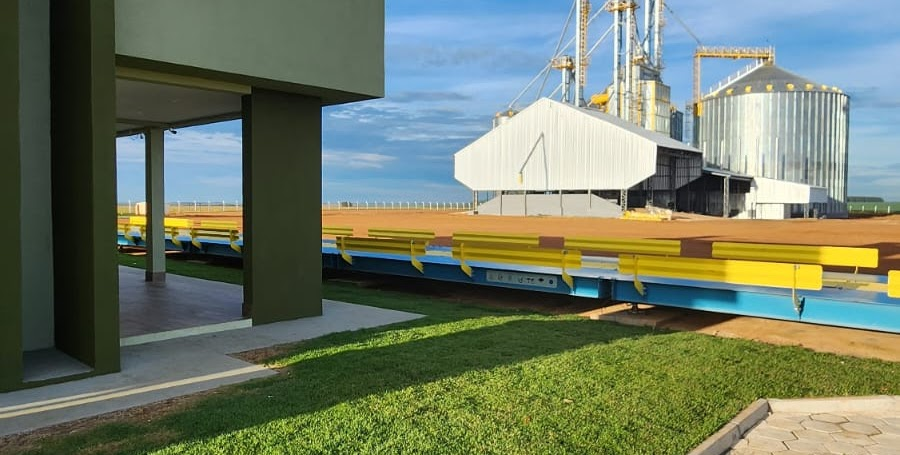

|  | Rodovia GO 010 KM 211, Zona Rural, Luziânia - Goiás |
Obra Iniciada em junho de 2021, Obra destinada a receber e expedir grãos, inicialmente de produção própria, com capacidade de armazenamento estático de 150 mil sacas, com alto fluxo de recebimento, expedição e secagem, contando com secador e Pré limpeza de 120 tn/h e elevadores tambem do mesmo volume, caixa de expedição com balança pneumática , facilitando e dando agilidade ao processo. Tambem a unidade contara com Escritorio Central do Grupo , centralizando o administrativo das fazendas.